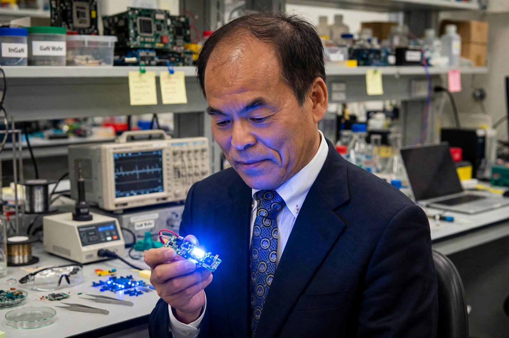

Shuji Nakamura
| Born | 22 May 1954, Ikata, Ehime, Japan |
|---|---|
| Known for | High-brightness blue LED and blue laser diode at Nichia |
| Awards | Nobel Prize in Physics (2014) |

[Image: Photograph of Shuji Nakamura holding a glowing blue LED device]Shuji Nakamura (born 22 May 1954) is a Japanese-American electrical engineer and inventor, and a professor at the University of California, Santa Barbara. Working at the small chemical company Nichia in Tokushima, he turned the gallium nitride breakthroughs of Isamu Akasaki and Hiroshi Amano into products: the first high-brightness blue LED (1993–94) and the first blue-violet laser diode (1996) — achievements recognised by his share of the 2014 Nobel Prize in Physics.
Nakamura's path was unconventional: no doctorate when he began (his PhD came later, from papers), a tiny research budget, and management that repeatedly ordered him to stop. He developed two-flow MOCVD crystal growth, InGaN quantum-well structures for bright emission, and thermal annealing to activate p-type GaN. His later dispute with Nichia over the invention's bonus — settled in 2005 for ¥843 million after a landmark court ruling valuing his contribution at ¥20 billion — reshaped Japanese employee-invention law. He emigrated to UCSB in 2000 and co-founded companies in LED lighting and laser diodes.
Impact
Nakamura's blue LED completed the RGB trio: white LED lamps, LED-backlit and then direct LED displays, traffic lights and headlights followed within years, and his blue laser made Blu-ray's dense storage possible. The achievement is routinely ranked among the most consequential inventions of the late twentieth century for its energy savings alone.